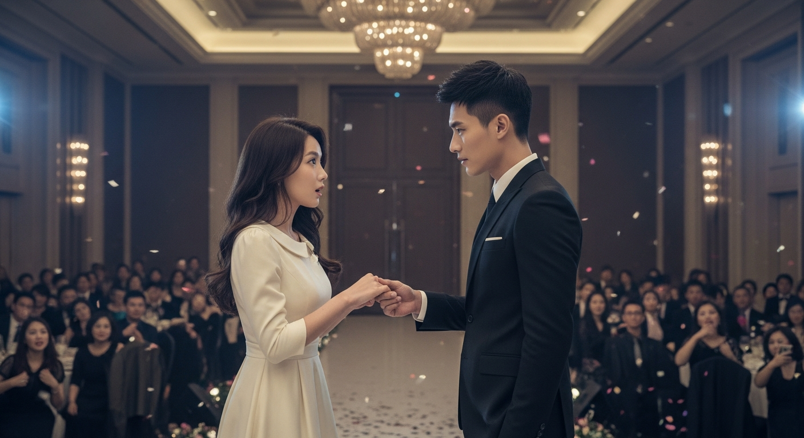
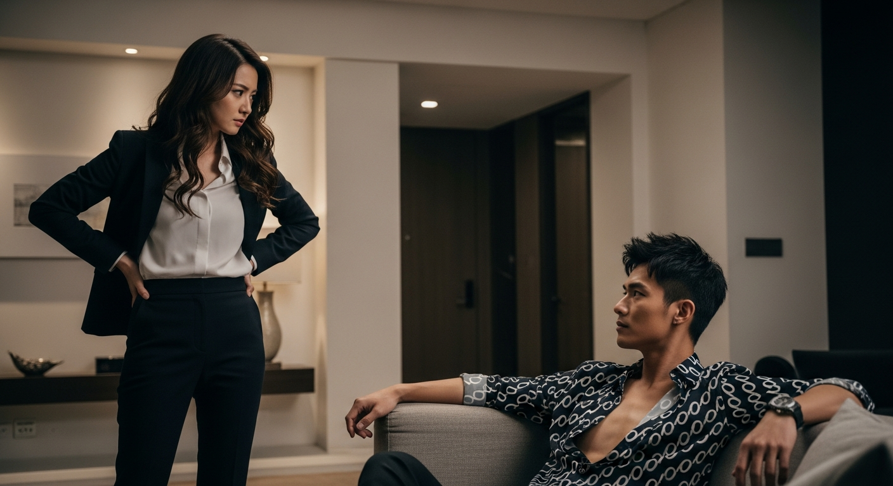

《獨家佔有：總裁的隱婚甜妻，寵妻無度，愛入骨髓》

第 1 篇
震驚！財閥總裁竟當眾喊她「太太」？這婚訊也太野了吧！
想像一下，你只是個社畜小OL，在公司年會上被老闆點名上台領獎，結果… 砰！全場焦點的財閥總裁，那個高冷到冰點、讓無數名媛擠破頭想攀附的陸氏集團繼承人陸廷琛，竟然在百萬鎂光燈下，緩緩走向你，輕輕挽住你的腰，低沉的嗓音像磁鐵一樣宣布：「各位，這位是我的… 陸太太。」哇靠！空氣瞬間凝結，所有人的下巴都快掉到地上。包括我，沈星辰。我腦袋裡只剩一個字：WTF？！我跟他，明明只是兩年前一紙神秘契約的隱婚關係啊！他這是要搞哪齣？更可怕的是，他的眼神裡，沒有一絲玩笑，只有那種… 彷彿要把你吞噬的深情。我感覺自己像被電流擊中，全身酥麻。這場年會，註定要載入史冊了。你可能不知道，這一切的起因，其實只是一場… 「意外」。
💬 財閥總裁當眾認愛？這不是八點檔，是我的真實人生！

第 2 篇
契約甜妻的逆襲？總裁大人，說好的「互不干涉」呢？！
年會的熱搜炸了，我的名字和陸廷琛綁在一起衝上熱一，閱讀量直接破億。網友們瘋狂扒皮，甚至還有人爆料我之前被拍到跟別的男人一起喝咖啡，瞬間引發「小三上位」、「契約婚姻變真愛」等各種離譜猜測。我簡直想找個地縫鑽進去！回到家，陸廷琛坐在客廳，修長的手指輕敲桌面，眼神深邃得像無底洞。他一字一句地說：「沈星辰，我們的婚姻關係，從今天起，不再隱瞞。」我氣得差點把手上的包甩過去：「陸總，說好的互不干涉，你是不是忘了？」他卻輕蔑一笑：「忘了？契約上可沒說不能公開。而且，我的女人，不需要偷偷摸摸。」這男人簡直是霸道到沒邊了！你可能不知道，他這句話背後，隱藏著一個巨大的秘密。
💬 他公開了我們的關係，卻沒問過我。這男人，是甜寵還是PUA？
第 3 篇
狗仔追到我家？我，總裁夫人，今天就要反擊！
隔天，我家門口被狗仔堵得水洩不通，閃光燈亮得像白天。我連上班都成了奢望！這種被窺視的感覺，讓獨立慣了的我感到極度不適。我給陸廷琛發了條訊息：「陸總，你惹的麻煩，自己解決！」結果他回了一句：「你是我的夫人，你的麻煩，就是我的麻煩。」我差點沒被氣笑。但他隨後做的，卻讓我大跌眼鏡。他直接在社群媒體上發了一張我的照片，配文：「我的太太，沈星辰。未來，我會用我的方式，讓她成為最好的自己。」瞬間，輿論風向大轉！從「小三上位」變成「霸道總裁寵妻狂魔」，甚至連我之前被黑的流言都神奇地消失了。這招「以退為進」玩得太高明了！更可怕的是，他似乎對我的喜好和厭惡瞭若指掌，連我的反擊，都在他的預料之中。
💬 我被黑出翔，他卻發了張我的照片。總裁的寵妻手段，我看不懂！

第 4 篇
甜寵背後的博弈：他的溫柔，是真心還是套路？
公開關係後，陸廷琛對我的「寵愛」簡直無孔不入。上班有專車接送，午餐是米其林大廚外送，甚至連我隨口提到喜歡的限量版包包，隔天就出現在我的辦公桌上。表面上，我是被寵上天的總裁夫人，但實際上，我感覺自己像被關在一個華麗的籠子裡。他對我的控制欲強到令人窒息，無論我去哪，和誰見面，他似乎都能第一時間知道。我的獨立空間正在一點點被侵蝕。我開始懷疑，這一切是真心還是他習慣性的掌控欲作祟？想像一下，如果你每天被一個超級霸道又超級有錢的男人包圍，他給你全世界，卻也同時拿走了你的自由，你會怎麼選？這不只是愛，更是一場心理博弈。
💬 他寵我寵到極致，卻也讓我喘不過氣。這份愛，是真的嗎？

第 5 篇
家族聚餐修羅場：他的舊愛現身？我，才是正宮！
陸家的家族聚餐，簡直就是一場名利場的修羅場。所有人都盯著我這個「突然冒出來」的總裁夫人。更可怕的是，他的「青梅竹馬」，那個氣質出眾、家世顯赫的白富美蘇語薇，竟然也出現了！她裝作不經意地挽住陸廷琛的手臂，眼神挑釁地看向我。我心裡瞬間警鈴大作，這綠茶味兒也太濃了吧！然而，陸廷琛只是輕輕地，卻堅決地，抽回了手。他走到我身邊，當著所有人的面，將我攬入懷中，溫柔地對我說：「星辰，別理會不相干的人。」那一刻，我看到蘇語薇的臉色瞬間煞白。他的態度，讓所有流言不攻自破。你可能不知道，他之所以這麼做，是因為他發現了一個，足以改變我們兩人命運的「秘密」。
💬 霸總家族聚餐，舊愛現身挑釁？我正宮地位穩如泰山！

第 6 篇
天價買斷我的夢想？這份愛，我到底要不要得起？
最近我正在籌備一個獨立設計師的夢想計畫，陸廷琛卻突然提出要全資贊助，甚至要買下我工作室的所有股份。他用一種不容置喙的語氣說：「我只是想讓你做自己喜歡的事，沒有後顧之憂。」聽起來是極致的寵愛，但實際上，這讓我感到極度不安。表面上，他是在支持我的夢想，但實際上，這是不是又一種變相的控制？他用金錢和權力，將我牢牢綁在他的世界裡。我深知他愛我，愛得入骨髓，但他這種愛，就像一座金碧輝煌的牢籠，讓我感到窒息。如果我接受了，我還能保持我的獨立嗎？還是會徹底變成「陸廷琛的附屬品」？我必須做出選擇，而這個選擇，將決定我人生的走向。
💬 他愛我，愛到想買斷我的夢想。這份愛，我該如何承擔？

第 7 篇
獨家佔有：總裁的隱婚甜妻，愛入骨髓，終成眷屬！
最終，我選擇了拒絕他的全資贊助。我告訴陸廷琛：「陸廷琛，我愛你，但我更愛那個能獨立站在你身邊的沈星辰。我的夢想，我想靠自己去實現。」他看著我，眼神中先是震驚，隨後竟露出了我從未見過的… 溫柔與尊重。他突然從西裝口袋裡拿出一枚鑽戒，單膝跪下：「沈星辰，我為我的霸道道歉。但請相信，我的愛從未改變。我不需要你成為我的附屬品，我只需要你，成為我的妻子。這次，不是契約，是真心。」鑽戒在陽光下閃耀，那一刻，我所有的掙扎、所有的不安，都化作了淚水。他終於明白了，愛，不是佔有，而是互相成就。這不是童話，這是我們真實的愛情。一個霸道總裁，和一個倔強女孩的故事，最終走向了最美的篇章。正如那句話：最好的愛情，不是我把你變成我想要的樣子，而是我愛你原本的樣子，並且，陪你成為最好的自己。
💬 他單膝跪下，說出了最深情的告白。這份愛，我願意！